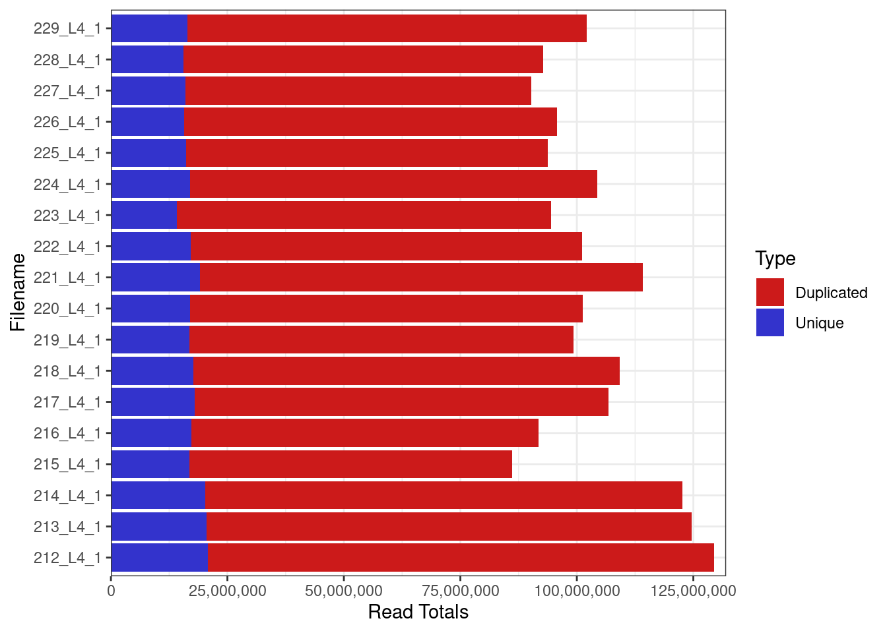

Last updated: 2023-03-22
Checks: 7 0
Knit directory: NMD-analysis/
This reproducible R Markdown analysis was created with workflowr (version 1.7.0). The Checks tab describes the reproducibility checks that were applied when the results were created. The Past versions tab lists the development history.
Great! Since the R Markdown file has been committed to the Git repository, you know the exact version of the code that produced these results.
Great job! The global environment was empty. Objects defined in the global environment can affect the analysis in your R Markdown file in unknown ways. For reproduciblity it’s best to always run the code in an empty environment.
The command set.seed(20230314) was run prior to running
the code in the R Markdown file. Setting a seed ensures that any results
that rely on randomness, e.g. subsampling or permutations, are
reproducible.
Great job! Recording the operating system, R version, and package versions is critical for reproducibility.
Nice! There were no cached chunks for this analysis, so you can be confident that you successfully produced the results during this run.
Great job! Using relative paths to the files within your workflowr project makes it easier to run your code on other machines.
Great! You are using Git for version control. Tracking code development and connecting the code version to the results is critical for reproducibility.
The results in this page were generated with repository version f2ed11a. See the Past versions tab to see a history of the changes made to the R Markdown and HTML files.
Note that you need to be careful to ensure that all relevant files for
the analysis have been committed to Git prior to generating the results
(you can use wflow_publish or
wflow_git_commit). workflowr only checks the R Markdown
file, but you know if there are other scripts or data files that it
depends on. Below is the status of the Git repository when the results
were generated:
Ignored files:
Ignored: .Rhistory
Ignored: .Rproj.user/
Ignored: analysis/Enichment-analysis-fgsea.nb.html
Ignored: analysis/Enichment-analysis-goseq.nb.html
Untracked files:
Untracked: NMD-DEG-limma.xlsx
Untracked: data/LTK_Sample Metafile_V3.txt
Untracked: data/fastqc/
Untracked: output/DEG-limma-results.Rda
Untracked: output/DEG-list.Rda
Untracked: output/limma-matrices.Rda
Unstaged changes:
Modified: analysis/DEG-analysis.Rmd
Modified: analysis/_site.yml
Modified: code/libraries.R
Note that any generated files, e.g. HTML, png, CSS, etc., are not included in this status report because it is ok for generated content to have uncommitted changes.
These are the previous versions of the repository in which changes were
made to the R Markdown (analysis/Quality-control.Rmd) and
HTML (docs/Quality-control.html) files. If you’ve
configured a remote Git repository (see ?wflow_git_remote),
click on the hyperlinks in the table below to view the files as they
were in that past version.
| File | Version | Author | Date | Message |
|---|---|---|---|---|
| Rmd | f2ed11a | unawaz1996 | 2023-03-22 | wflow_publish(c("analysis/index.Rmd", "analysis/Enichment-analysis-fgsea.Rmd", |
source("code/libraries.R")twoCols <- c(rgb(0.8, 0.1, 0.1), rgb(0.2, 0.2, 0.8))In order to perform QC, an EnsDB object was obtained using the AnnotationHub package. This provided the GC content and length for each of the transcripts contained in the release.
Metadata for each fastq file was also loaded. Reads were provided as paired-end reads, with n = 3 samples for each genotype.
Library sizes for unprocessed data ranged between 86,178,215 and 129,449,694 reads.
rawFqc <- list.files(
path = "data/fastqc/Raw",
pattern = "zip",
full.names = TRUE
) %>%
FastqcDataList()r1 <- grepl("_1", fqName(rawFqc))
r2 = grepl("_2", fqName(rawFqc))
plotReadTotals(rawFqc[r1], barCols = twoCols)
In poly(A) selected RNA-seq library preparation methods, the nonuniform coverage of transcripts is a prevalent issue. As poly(A) tail only occers at the 3’ end of the mRNA, this can usually result in an overrepresentation of the 3’d end. Bias at the 5′ end of RNA can also happen because of various factors, such as the fragmentation method (the 5′ end of RNA is more stable), reverse transcription from RNA to cDNA and strand-oriented library construction protocol.
GC content allows the exploration of the sequencing coverage and can indicate issues in overrepresentation. It has been observed that either high or low GC content will result in lower depth coverage.
#gcPlots <- list(
# r1 = plotGcContent(
# x = rawFqc[r1],
# plotType = "line",
# gcType = "Transcriptome",
# species = "Mmusculus"
# ),
# r2 = plotGcContent(
# x = rawFqc[!r1],
# plotType = "line",
# gcType = "Transcriptome",
# species = "Mmusculus"
# )
#)
#lg <- get_legend(gcPlots$r2 + theme(legend.position = "bottom"))
#plot_grid(
# plot_grid(
# r1 = gcPlots$r1 +
# ggtitle("R1: GC Distribution", subtitle = c()) +
# theme(legend.position = "none"),
# r2 = gcPlots$r2 +
# ggtitle("R2: GC Distribution", subtitle = c()) +
# theme(legend.position = "none")
# ),
# lg = lg,
# nrow = 2,
# rel_heights = c(5,2)
#)Trimmed reads were: 1. Aligned using Salmon to a transcriptome
#group.labs <- c("Control", "UPF3A KD", "UPF3A OE", "UPF3B KD", "Double KD", "UPF3A OE, UPF3B KD")
#names(group.labs) <- unique(md$Group)
# upf3a
#txi_genes$abundance["ENSMUSG00000038398",] %>% melt() %>%
# rownames_to_column("sample") %>% cbind(md) %>%
# ggplot(aes(x=as.character(Sample), y= value, fill = Group)) +
# geom_bar(stat="identity", width = 4, color = "black", alpha = 0.9) +
# facet_grid(~Group, labeller = labeller(Group = group.labs) ) + ylab("tpm") + theme_bw() + xlab("") +
# scale_fill_manual(values = c("#9D5D7C", "#8B9488", "#657FA2", "#8483AD", "#8D779E", "#3A4170"),
# labels = c("UPF3A_KD_UPF3B_KD" = "Double KD", "UPF3A_KD" = "UPF3A KD",
# "UPF3B_KD" = "UPF3B KD", "UPF3A_OE" = "UPF3A OE",
# "UPF3A_OE_UPF3B_KD" = "UPF3A OE UPF3B KD")) +
# theme(legend.position = "none", axis.text.x=element_blank(),
# strip.background =element_rect(fill="#D3D5E3", color = "black"))#upf3b
#txi_genes$abundance["ENSMUSG00000036572",] %>% melt() %>%
# rownames_to_column("sample") %>% cbind(md) %>%
# ggplot(aes(x=as.character(Sample), y= value, fill = Group)) +
# geom_bar(stat="identity", width = 4, color = "black", alpha = 0.9) +
# facet_grid(~Group, labeller = labeller(Group = group.labs)) +
# ylab("tpm") + theme_bw() + xlab("") +
# scale_fill_manual(values = c("#9D5D7C", "#8B9488", "#657FA2", "#8483AD", "#8D779E", "#3A4170")) +
# theme(legend.position = "none", axis.text.x=element_blank(),
# strip.background =element_rect(fill="#D3D5E3", color = "black"))
sessionInfo()R version 4.2.2 Patched (2022-11-10 r83330)
Platform: x86_64-pc-linux-gnu (64-bit)
Running under: Ubuntu 22.04.2 LTS
Matrix products: default
BLAS: /usr/lib/x86_64-linux-gnu/blas/libblas.so.3.10.0
LAPACK: /usr/lib/x86_64-linux-gnu/lapack/liblapack.so.3.10.0
locale:
[1] LC_CTYPE=en_AU.UTF-8 LC_NUMERIC=C
[3] LC_TIME=en_AU.UTF-8 LC_COLLATE=en_AU.UTF-8
[5] LC_MONETARY=en_AU.UTF-8 LC_MESSAGES=en_AU.UTF-8
[7] LC_PAPER=en_AU.UTF-8 LC_NAME=C
[9] LC_ADDRESS=C LC_TELEPHONE=C
[11] LC_MEASUREMENT=en_AU.UTF-8 LC_IDENTIFICATION=C
attached base packages:
[1] grid stats4 tools stats graphics grDevices utils
[8] datasets methods base
other attached packages:
[1] ggrepel_0.9.3 pander_0.6.5
[3] msigdbr_7.5.1 cowplot_1.1.1
[5] ngsReports_2.0.3 patchwork_1.1.2
[7] VennDiagram_1.7.3 futile.logger_1.4.3
[9] UpSetR_1.4.0 fgsea_1.24.0
[11] GOplot_1.0.2 RColorBrewer_1.1-3
[13] gridExtra_2.3 ggdendro_0.1.23
[15] AnnotationHub_3.6.0 BiocFileCache_2.6.1
[17] dbplyr_2.3.1 openxlsx_4.2.5.2
[19] ggiraph_0.8.6 wasabi_1.0.1
[21] sleuth_0.30.1 DT_0.27
[23] VennDetail_1.14.0 msigdb_1.6.0
[25] GSEABase_1.60.0 graph_1.76.0
[27] annotate_1.76.0 XML_3.99-0.13
[29] pheatmap_1.0.12 ggvenn_0.1.9
[31] MetBrewer_0.2.0 ggpubr_0.6.0
[33] venn_1.11 viridis_0.6.2
[35] viridisLite_0.4.1 tximeta_1.16.1
[37] tximport_1.26.1 goseq_1.50.0
[39] geneLenDataBase_1.34.0 BiasedUrn_2.0.9
[41] org.Mm.eg.db_3.16.0 EnsDb.Mmusculus.v79_2.99.0
[43] ensembldb_2.22.0 AnnotationFilter_1.22.0
[45] GenomicFeatures_1.50.4 AnnotationDbi_1.60.0
[47] biomaRt_2.54.0 edgeR_3.40.2
[49] limma_3.54.1 DESeq2_1.38.3
[51] SummarizedExperiment_1.28.0 Biobase_2.58.0
[53] MatrixGenerics_1.10.0 matrixStats_0.63.0
[55] GenomicRanges_1.50.2 GenomeInfoDb_1.34.9
[57] IRanges_2.32.0 S4Vectors_0.36.1
[59] BiocGenerics_0.44.0 corrplot_0.92
[61] lubridate_1.9.2 forcats_1.0.0
[63] purrr_1.0.1 readr_2.1.4
[65] tidyverse_2.0.0 stringr_1.5.0
[67] tidyr_1.3.0 scales_1.2.1
[69] data.table_1.14.8 readxl_1.4.2
[71] tibble_3.1.8 magrittr_2.0.3
[73] reshape2_1.4.4 ggplot2_3.4.1
[75] dplyr_1.1.0.9000 workflowr_1.7.0
loaded via a namespace (and not attached):
[1] rappdirs_0.3.3 rtracklayer_1.58.0
[3] bit64_4.0.5 knitr_1.42
[5] DelayedArray_0.24.0 KEGGREST_1.38.0
[7] RCurl_1.98-1.10 generics_0.1.3
[9] callr_3.7.3 lambda.r_1.2.4
[11] RSQLite_2.3.0 bit_4.0.5
[13] tzdb_0.3.0 xml2_1.3.3
[15] httpuv_1.6.9 xfun_0.37
[17] hms_1.1.2 jquerylib_0.1.4
[19] babelgene_22.9 evaluate_0.20
[21] promises_1.2.0.1 fansi_1.0.4
[23] restfulr_0.0.15 progress_1.2.2
[25] DBI_1.1.3 geneplotter_1.76.0
[27] htmlwidgets_1.6.1 ellipsis_0.3.2
[29] backports_1.4.1 vctrs_0.5.2.9000
[31] abind_1.4-5 cachem_1.0.7
[33] withr_2.5.0 GenomicAlignments_1.34.0
[35] prettyunits_1.1.1 lazyeval_0.2.2
[37] crayon_1.5.2 labeling_0.4.2
[39] pkgconfig_2.0.3 nlme_3.1-162
[41] ProtGenerics_1.30.0 rlang_1.0.6.9000
[43] lifecycle_1.0.3 filelock_1.0.2
[45] cellranger_1.1.0 rprojroot_2.0.3
[47] Matrix_1.5-3 carData_3.0-5
[49] Rhdf5lib_1.20.0 zoo_1.8-11
[51] whisker_0.4.1 processx_3.8.0
[53] png_0.1-8 rjson_0.2.21
[55] bitops_1.0-7 getPass_0.2-2
[57] rhdf5filters_1.10.0 Biostrings_2.66.0
[59] blob_1.2.3 rstatix_0.7.2
[61] ggsignif_0.6.4 memoise_2.0.1
[63] plyr_1.8.8 zlibbioc_1.44.0
[65] compiler_4.2.2 BiocIO_1.8.0
[67] Rsamtools_2.14.0 cli_3.6.0
[69] XVector_0.38.0 ps_1.7.2
[71] formatR_1.14 MASS_7.3-58.2
[73] mgcv_1.8-41 tidyselect_1.2.0
[75] stringi_1.7.12 highr_0.10
[77] yaml_2.3.7 locfit_1.5-9.7
[79] sass_0.4.5 fastmatch_1.1-3
[81] timechange_0.2.0 parallel_4.2.2
[83] rstudioapi_0.14 uuid_1.1-0
[85] git2r_0.31.0 farver_2.1.1
[87] digest_0.6.31 BiocManager_1.30.20
[89] shiny_1.7.4 Rcpp_1.0.10
[91] car_3.1-1 broom_1.0.3
[93] BiocVersion_3.16.0 later_1.3.0
[95] httr_1.4.5 colorspace_2.1-0
[97] fs_1.6.1 splines_4.2.2
[99] plotly_4.10.1 systemfonts_1.0.4
[101] xtable_1.8-4 jsonlite_1.8.4
[103] futile.options_1.0.1 R6_2.5.1
[105] pillar_1.8.1 htmltools_0.5.4
[107] mime_0.12 glue_1.6.2
[109] fastmap_1.1.1 BiocParallel_1.32.5
[111] interactiveDisplayBase_1.36.0 codetools_0.2-19
[113] utf8_1.2.3 lattice_0.20-45
[115] bslib_0.4.2 curl_5.0.0
[117] zip_2.2.2 GO.db_3.16.0
[119] admisc_0.30 rmarkdown_2.20
[121] munsell_0.5.0 rhdf5_2.42.0
[123] GenomeInfoDbData_1.2.9 gtable_0.3.1